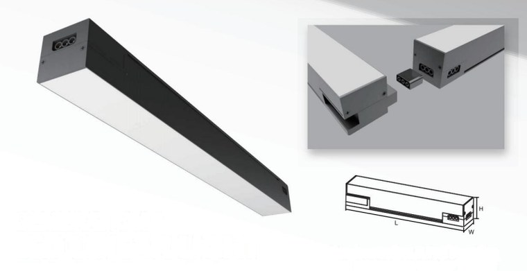

1
Luminaria lineal conectable · Cielo raso
Geometría Continua
Lineal conectable
Figuras rectangulares
La luz deja de ser un accesorio y pasa a ser el dibujo del cielo raso. Los módulos lineales se unen entre sí para trazar rectángulos continuos, sin cortes ni empalmes visibles, que ordenan el volado y le dan una lectura moderna e intencional.
Al ser un sistema conectable, la figura se adapta a la geometría real del ingreso: se pueden agrandar, repetir o reconfigurar los rectángulos sin rehacer la instalación, y la alimentación se resuelve desde un solo punto.
